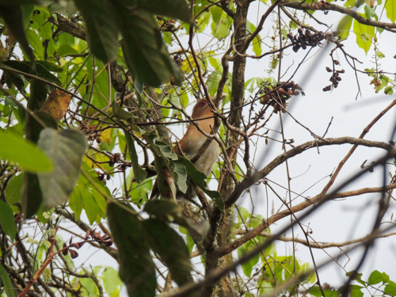
Nome popular:
Nome científico:
Características morfológicas:
Aimentação e comportamento:
Distribuição geográfica:
Nome popular: Alma-de-gato
Nome científico: Piaya cayana
Características morfológicas: Apresenta plumagem ferrugínea nas partes superiores, peito acinzentado,
ventre escuro, cauda longa, escura e com as pontas das retrizes claras, bico amarelo e íris vermelha.
Aimentação e comportamento: Alimenta-se basicamente de insetos, principalmente lagartas, que captura
ao examinar as folhas, inclusive em suas partes inferiores. É curioso notar que come até mesmo
lagartas com espinhos aparentemente venenosos. Também consome frutinhas, ovos de outras aves,
motivo pelo qual é muitas vezes afugentado por suiriris e outras espécies que estejam com ovos e
filhotes. Também caça lagartixas, pererecas e ataca filhotes de aves de outras espécies. Seu nome em inglês,
“squirrel cuckoo”, literalmente traduzido como “cuco-esquilo”,
expressa muito bem o comportamento desta ave, que lembra muito os esquilos pelo modo como pula entre as
ramagens com sua longa cauda. Já seus dois nomes mais comuns em português, chincoã e alma-de-gato, referem-se
respectivamente à sua vocalização e ao seu modo sorrateiro, até mesmo um tanto misterioso
Distribuição geográfica: Ocorre em todo o Brasil e tem uma vasta distribuição na América Latina.
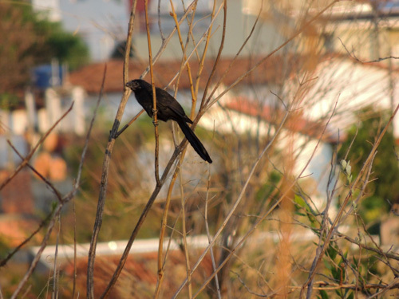
Nome popular:
Nome científico:
Características morfológicas:
Aimentação e comportamento:
Distribuição geográfica:
Nome popular: Anu-preto
Nome científico: Crotophaga ani
Características morfológicas: Corpo franzino, mede entre 35 e 36 centímetros de comprimento e pesa entre
76 e 222 gramas de peso, sendo que as fêmeas da espécie apresentam peso menor que os machos.
Sua coloração é preto uniforme, possui um bico alto, forte e curto que apresenta cúlmen na mesma coloração do
bico. Cauda longa e graduada.
Aimentação e comportamento: É essencialmente carnívoro, comendo gafanhotos, percevejos, aranhas, miriápodes
etc. Preda também lagartas peludas e urticantes, lagartixas e camundongos. Pesca na água rasa, e periodicamente
come frutas, bagas, coquinhos e sementes, sobretudo na época seca, quando há escassez de artrópodes. Presenciei
em Bariri-SP, em época de sêca, um bando com 7 indivíduos se alimentando de amoras.
Vive em paisagens abertas com moitas e capões entre pastos e jardins; ao longo das rodovias costuma ser quase a
única que se vê, como habitante de lavouras abandonadas. Prefere lugares úmidos. Sendo um fraco voador, mal
resiste à brisa, e qualquer vento mais forte leva-o para longe. Gosta de apanhar sol e banhar-se na poeira.
Muitas vezes adquire plumagem com coloração adventícia, ficando fortemente tingida com a cor da terra do local
ou de cinza e carvão, sobretudo se antes correr pelo capim melado. Pela manhã e após as chuvas pousa de asas
abertas para enxugar-se. À noite, para se esquentar, junta-se em filas apertadas ou aglomera-se em montões
desordenados; acontece de um correr sobre as costas dos outros que formam a fila, para forçar a sua penetração
entre os companheiros; arrumam as suas plumagens reciprocamente. Procura moitas de taquara para pernoitar.
Distribuição geográfica: Ocorre desde o sudeste dos Estados Unidos da América no estado da Flórida, nas
ilhas do Caribe, sudeste do México no estado de Quintana Roo, Costa Rica até o Equador, arquipélago de Galápagos
até o norte da Argentina. Também ocorre na porção leste da América do Sul, desde o leste da cordilheira dos Andes
na Venezuela, Guianas, Brasil até o norte do Uruguai.

Nome popular: Ariramba-de-cauda-ruiva
Nome científico: Galbula ruficauda
Características morfológicas: Mede entre 19 e 25 centímetros e pesa entre 18 e 28 gramas. À primeira vista,
parece um grande beija-flor, devido tanto ao seu bico longo e fino, quanto à coloração verde-amarelada
iridescente de grande parte da plumagem. No macho as partes superiores, incluindo a face, a coroa e o peito
são de coloração verde brilhante metálico. A cauda é relativamente longa e gradual. O par de penas retrizes
centrais é alongado e tem uma cor verde metálica, as demais penas retrizes externas são castanhas. O ventre,
crisso, as penas sob a cauda e a parte de baixo das asas são castanhos. O bico é preto, fino e longo como é
característico da família Galbulidae e seu tamanho varia de 4 a 5 centímetros. A coloração das pernas varia
de marrom amarelada a cinza carne.
Aimentação e comportamento: Caça exclusivamente insetos em voo, com grande destreza e velocidade para apanhar
presas desde o tamanho de uma pequena abelha sem ferrão (meliponídeos) até libélulas e mariposas. Após capturar
o inseto, volta ao ponto de partida e bate-o repetidamente contra o poleiro, retirando asas e quebrando a
carapaça externa, o que facilita a ingestão. É encontrado nas áreas florestadas e secas, nos ambientes mais
adensados, especialmente em suas bordas e clareiras. Pousa em galhos e cipós expostos, de 1 a 4 metros de altura.
Esses poleiros são usados seguidamente como pontos de espreita das presas e locais de alimentação. Uma vez
localizado, este local facilita o encontro dessa ave, representante de uma família exclusiva das Américas.
Distribuição geográfica: Ocorre da região do México até a Bolívia e Argentina e em boa parte do Brasil, sendo
raro na região sul.
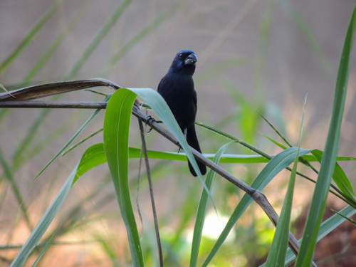
Nome popular:
Nome científico:
Características morfológicas:
Aimentação e comportamento:
Distribuição geográfica:
Nome popular: Azulão
Nome científico: Cyanoloxia brissonii
Características morfológicas: Tem bico avantajado e negro. O macho é totalmente azul-escuro, com partes
azuis brilhantes. A fêmea e os filhotes são totalmente pardos, com as partes inferiores um pouco mais claras.
Canto sonoro e melodioso. Emite um canto diferente no crepúsculo e pela madrugada.
As populações do sul do Brasil possuem tamanho corporal mais avantajado, quando comparado com as do Nordeste.
Aimentação e comportamento: Sua alimentação é bem variada, sobretudo de sementes, frutas e insetos.
É encontrado em áreas com água abundante na beira de pântanos, grotas, brejos, florestas ralas, matas secundárias
espessas e plantações.
Esta ave é territorialista. Não é possível vê-la em bando. Se existe um casal em certa localização, só será possível
encontrar outro casal a uma certa distância. Os filhotes de azulão ficam com seus pais até um certo tempo, depois
já partem para uma vida “independente”, pois o instinto territorialista do azulão não o deixará ficar por perto após
estar na fase adulta. Assim, o filhote terá que achar seu próprio território e sua parceria para acasalamento. Se um
macho invade o território de outro, com certeza haverá um conflito, e será bem violento. Por isso existe um certo
respeito entre as aves e seus territórios, mas sempre há aquele mais valente que, por território ou por uma fêmea,
entrará em conflito e conquistará o desejado.
Distribuição geográfica: Sua distribuição geográfica abrange do Nordeste do Brasil ao Rio Grande do Sul, bem como
na Bolívia, Paraguai e Argentina.
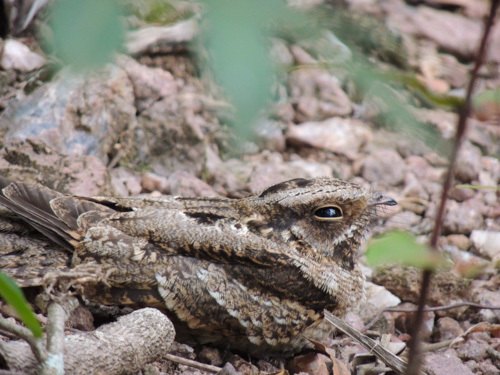
Nome popular:
Nome científico:
Características morfológicas:
Aimentação e comportamento:
Distribuição geográfica:
Nome popular: Bacurau-chintã
Nome científico: Hydropsalis parvula
Características morfológicas: Mede cerca de 20 cm de comprimento. O macho apresenta a garganta, uma larga faixa
nas asas e a ponta da cauda (vista de baixo) brancas e a fêmea possui a garganta amarelada e não tem branco nas asas
e na cauda.
Aimentação e comportamento: Alimenta-se de insetos que captura em voo. Comum em campos com árvores e arbustos.
É noturno e vive no chão, descansando durante o dia sob arbustos. Pousa sobre troncos para cantar.
Distribuição geográfica: Presente em todo o Brasil, e também da Venezuela à Bolívia e Argentina. Migratório,
aparece em quantidade em algumas regiões, em determinadas épocas do ano, como no Estado de Minas Gerais ( setembro).
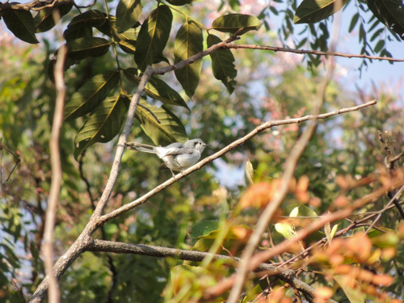
Nome popular:
Nome científico:
Características morfológicas:
Aimentação e comportamento:
Distribuição geográfica:
Nome popular: Balança-rabo-de-máscara
Nome científico: Polioptila dumicola
Características morfológicas: Tem cerca de 12 centímetros de comprimento, e pesa menos de 7 gramas.
Aparenta estar em busca contínua por alimentação. Seu lado superior é cinzento e a parte inferior é branca
(cinzento-azulado na região sul). O macho tem uma máscara negra no rosto.
Tem uma voz bonita e na primavera está sempre cantando muito suavemente. Além da voz “grä”, “zeret-grä”
(chamada; advertência), no período reprodutivo o macho possui um canto alto e melodioso com diversos motivos
alternados, que podem lembrar os de outras aves, alguns terminando como risadas.
Aimentação e comportamento: É uma ave insetívora. Vive nos campos abertos, entre árvores espinhentas. Ocorre
no cerrado e em áreas urbanas. Vive abertamente na copa das árvores, exposto ao vento e à forte insolação. Aprecia
regiões áridas. Mantém a cauda em constante movimento, quer vertical, quer lateralmente. Se excitado abre a mesma em
leque, expondo a contrastante coloração branca e preta.
Distribuição geográfica: Ocorre na Bolívia, Paraguai, Argentina, Uruguai e Brasil (sudeste do Pará, Goiás, Minas
Gerais a São Paulo, Rio Grande do Sul e Mato Grosso). De acordo com Ghizoni-Jr (2004), essa espécie foi registrada
também em Santa Catarina pela primeira vez em 2000, no município de Chapecó.
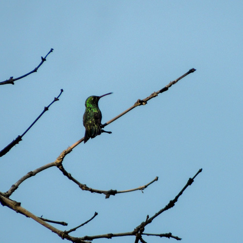
Nome popular:
Nome científico:
Características morfológicas:
Aimentação e comportamento:
Distribuição geográfica:
Nome popular: Beija-flor-de-garganta-verde
Nome científico: Chionomesa fimbriata
Características morfológicas: Mede de 8,5 a 11 cm de comprimento e pesa em torno de 5 g. A cor dominante é um
verde claro, com tons brilhantes sob luz adequada. Olhos escuros e, atrás do olho, destaca-se um ponto branco,
mesmo tom da barriga e do desenho afunilado do peito, terminando na garganta de aspecto escamado, delimitada pelo
verde dominante do pescoço e peito. Asas escuras e cauda arredondada com as penas centrais na cor verde-bronzeada,
as demais penas da cauda são progressivamente escuras. Bico longo e reto, com a maxila escura e a mandíbula na cor
rosada com a ponta escura. Os adultos possuem pernas e pés escuros. O centro do peito, abdome inferior e crisso são
brancos, enquanto que os flancos são da cor verde com brilho bronzeado.
Macho e fêmea são muito semelhantes. As fêmeas adultas têm barras brancas na garganta. A plumagem da fêmea é
ligeiramente mais opaca que a do macho.
Os jovens possuem coloração um pouco mais marrom-acinzentada com o abdome branc
Aimentação e comportamento: Apesar de pequeno, é ágil e inquieto, podendo bater as asas até 70 vezes por segundo.
Tal velocidade lhe garante a habilidade de ficar parado no ar em pleno voo. Para manter tal velocidade, gasta muita
energia, por isso alimenta-se cerca de 15 vezes por hora. Pode alimentar-se do suco direto da laranja posta no
comedouro para outras aves. Alimenta-se também do néctar da flor brinco-de-princesa, que fica nas praças públicas.
Adapta-se a ambientes urbanos e é um dos maiores frequentadores de garrafinhas de água com açúcar ou flores nas
grandes cidades do centro do Brasil.
Distribuição geográfica: Ocorre na capoeira, na restinga, também no Norte da América do Sul, em todo o Brasil
até o Paraguai e Bolívia.
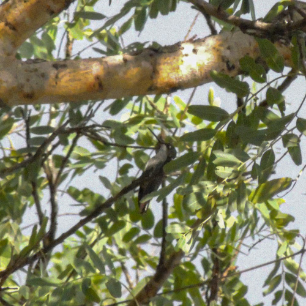
Nome popular:
Nome científico:
Características morfológicas:
Aimentação e comportamento:
Distribuição geográfica:
Nome popular: Beija-flor-tesoura-verde
Nome científico: Thalurania furcata
Características morfológicas: Mede cerca de 9,7 cm de comprimento. Macho com partes superiores esverdeadas,
garganta verde-metálica brilhante, peito e barriga azul-violeta-brilhante, a fronte pode ser verde brilhante,
verde escura ou preta conforme a ssp., as infracaudais podem variar do branco ao azul escuro conforme a ssp.,
cauda furcada azul escura ; fêmea com as partes inferiores cinza, ponta da cauda brancas.
Aimentação e comportamento: Alimenta-se em flores à pouca altura, buscando também insetos na vegetação ou
capturando-os no ar. Comum no sub-bosque de florestas altas, capoeiras e florestas de várzea. Vive solitário,
defendendo seu território de maneira agressiva. Em uma floresta no sudoeste amazônico brasileiro, Lima & Guilherme
(2021) verificaram que essa foi uma das espécies nectarívoras mais frequentemente capturadas em clareiras naturais
no interior da floresta, assim como Glaucis hirsutus, que faz desses ambientes bastante procurado pela espécie.
Distribuição geográfica: Quase todo o Brasil, da Amazônia ao Sudeste. No Sul, apenas no NO do RS. Encontrado
também do México à Bolívia, Paraguai e Argentina.
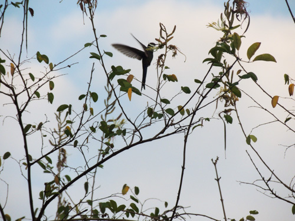
Nome popular:
Nome científico:
Características morfológicas:
Aimentação e comportamento:
Distribuição geográfica:
Nome popular: Beija-flor-tesoura
Nome científico: Eupetomena macroura
Características morfológicas: Mede entre 15 e 18 centímetros de comprimento, sendo um dos maiores beija-flores
brasileiros, pesando em torno de 6-11 gramas. Cabeça, pescoço e parte superior do tórax de um profundo azul violeta;
restante da plumagem verde-escuro iridescente. Pequena mancha branca atrás dos olhos; rêmiges castanho-escuro;
raques das primárias externas alargadas ; bico ligeiramente curvado para baixo, preto com 2,2 centímetros de
comprimento. Tem como característica principal a cauda longa e profundamente furcada que toma quase 2/3 do seu
tamanho total. A fêmea é quase igual ao macho, sendo um pouco menor e mais pálida. O imaturo é como a fêmea,
mas a cabeça é particularmente mais pálida e tingida de marrom. Os beija-flores têm o mais acelerado metabolismo
entre as aves.
Aimentação e comportamento: Assim como outros beija-flores, alimenta-se basicamente de néctar de flores, mas
também caça pequenos insetos com grande habilidade em voos curtos. Tem um papel importante na polinização de muitas
plantas. É um dos visitantes mais comuns de bebedouros de água com açúcar, em cidades ou em sítios. É frequentemente
o beija-flor mais comum do Brasil centro-oriental. Vive em áreas semiabertas, bordas de florestas, capoeiras, parques
e jardins, sendo comum até em grandes metrópoles. Não costuma ter medo do ser humano, aproximando-se das pessoas para
se alimentar nas garrafas com água e açúcar ou nas flores de seus jardins. É territorialista e extremamente agressivo,
principalmente na época da reprodução, quando é capaz de atacar outros pássaros muito maiores e pequenos mamíferos.
Em algumas épocas do ano, quando há menos disponibilidade de néctar, adota uma única árvore, que pode ser um mulungu
ou um ipê, como a sede de seu território e a defende ferozmente contra qualquer outra ave, principalmente contra outros
beija-flores e contra a cambacica. Ocorrem lutas ritualísticas intraespecíficas em voo em defesa do território.
É tão agressivo, que se juntou com um bem-te-vi atacou um gavião-carijó.
Distribuição geográfica: Ocorre das Guiana à Bolívia e Paraguai, todo o Brasil, exceto certas regiões da Amazônia.
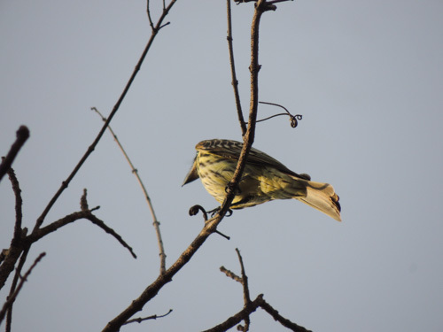
Nome popular:
Nome científico:
Características morfológicas:
Aimentação e comportamento:
Distribuição geográfica:
Nome popular: Bem-te-vi-rajado
Nome científico: Myiodynastes maculatus
Características morfológicas: Mede entre 19 e 23 centímetros de comprimento. A maior das espécies rajadas da
família, destaca-se pelo enorme bico e cabeça desproporcional ao corpo. É do tamanho do bem-te-vi. As listras
superciliares brancas não se unem na nuca, como nas outras espécies de plumagem rajada.
Aimentação e comportamento: Alimenta-se de insetos que apanha em voo a partir do poleiro e também de pequenos
frutos como o da canela-amarela, sendo um provável dispersor de sementes. Gosta muito também das bananas maduras da
embaúba. Aprecia os frutos/sementes da aroeira-do-campo (Schinus lentiscifolius). Adora cigarras e, para comê-las, faz
os seguintes passos: primeiro ele as apanha em pleno voo, em seguida bate a cigarra repetidas vezes em um galho até
suas asas caírem, depois joga o corpo da cigarra para cima e a engole. Habita a parte interna das matas ciliares,
cerradões, cambarazais e matas secas. Ocasionalmente, aparece em áreas de cerrado denso. Não costuma ficar em poleiros
expostos, como as outras espécies rajadas. Apesar do tamanho, confunde-se bem com a folhagem, usando as diferenças de
luz e sombra da região abaixo da copa. Muitas vezes, é difícil distingui-lo nesses locais. Vive em casais ou grupos
familiares, muito agressivos com outros bem-te-vis-rajados. O chamado de contato mais usado e capaz de denunciá-lo
parece um soluço agudo, levemente anasalado, repetido várias vezes. As outras aves respondem e podem encher a mata
com esse som. Sua vocalização consiste em uma série de guinchos repetidos. Passa a maior parte do tempo pousado em
poleiros nas árvores das bordas de matas secundárias, florestas de galeria ou matas de várzea.
Distribuição geográfica: Ocorre desde o México até a Argentina, presente em todos os países sul americanos,
exceto o Chile. Realiza migrações sazonais, indo para as latitudes mais baixas no inverno

Nome popular: Bem-te-vi
Nome científico: Pitangus sulphuratus
Características morfológicas: Ave de médio porte, o bem-te-vi mede entre 20,5 e 25 centímetros de comprimento e
pesa aproximadamente de 52-68 g. Tem o dorso pardo e a barriga de um amarelo vivo; uma listra branca no alto da
cabeça, acima dos olhos; cauda preta. O bico é preto, achatado, longo, resistente e um pouco encurvado. A garganta
é de cor branca. Possui um topete amarelo somente visível quando a ave o eriça em determinadas situações.
O seu canto trissilábico característico lembra as sílabas bem-te-vi, que dão o nome à espécie. Portanto, seu nome
popular possui origem onomatopeica.
Aimentação e comportamento: Possui uma variada alimentação. É insetívoro, podendo devorar centenas de insetos
diariamente. Mas também come frutas , ovos e até mesmo filhotes de outros pássaros, flores de jardins, minhocas,
pequenas cobras, lagartos, crustáceos, além de peixes e girinos de rios e lagos de pouca profundidade e inclusive
pequenos roedores. Costuma comer parasitas de bovinos e equinos. Apesar de ser mais comum vê-lo capturar
insetos pousados em ramos, também é comum atacá-los durante o voo.
Pode capturar aves muito jovens de espécies pequenas que estejam fora do ninho, tendo sido observada a captura de um
jovem bico-de-lacre que era alimentado no chão pelos pais e que provavelmente havia caído do ninho. É uma ave que está
sempre descobrindo novas formas de alimento. Devido ao seu regime alimentar generalista, por vezes contribui para o
controle de pragas de insetos, inclusive cupins urbanos. É agressivo, ameaça até gaviões e urubus quando esses se
aproximam de seu “território”. Costuma pousar em lugares salientes como postes e topos de árvores. Pode-se vê-lo
facilmente cantando em fios de telefone, em telhados ou banhando-se nos tanques ou chafarizes das praças públicas,
demonstrando grande capacidade de adaptação. É um dos primeiros a cantar ao amanhecer. Anda geralmente sozinho, mas pode
ser visto em grupos de três ou quatro que se reúnem habitualmente em antenas de televisão. Podem ser encontrados em áreas
urbanas, matas densas e ambientes aquáticos como lagoas, rios e praias.
Distribuição geográfica: É ave típica da América Latina, com uma distribuição geográfica que se estende predominantemente
do sul do México à Argentina, em uma área estimada em 16.000.000 km².
Entretanto, pode também ser encontrado no sul do Texas e na ilha de Trinidad. Foi introduzido nas Bermudas em 1957, importado
de Trinidad, e na década de 1970 em Tobago. Nas Bermudas, é a terceira espécie de ave mais comum, podendo atingir densidades
populacionais de 8 a 10 pares por hectare.

Nome popular: Bentevizinho-de-asa-ferrugínea
Nome científico: Myiozetetes cayanensis
Características morfológicas: Mede entre 16,5 e 18 centímetros de comprimento e pesa 26 gramas. Apresenta o píleo marrom
escuro fuliginoso com uma grande mancha central quase sempre oculta, de coloração amarelo-laranjado vibrante. Uma larga faixa
superciliar branca com os dois lados opostos confluentes na testa e não confluentes na nuca. As regiões lorais, orbital,
auricular e as laterais do pescoço são de coloração uniforme marrom escuro fuliginoso. A região traseira do pescoço, o dorso,
os escapulários, o uropígio, e as supracaudais são de coloração marrom oliveáceo simples. Asas, supracaudais e retrizes de
coloração geral marrom-escuras com bordas acastanhadas. As rêmiges primárias, secundárias e coberteiras maiores das asas
marginados de verde-oliváceo claro. As rêmiges secundárias distais e primárias proximais são marginados com coloração ferrugínea
intensa. As primárias apresentam margens estreitas com coloração ferrugínea ou rufas. Queixo e garganta são brancos. As demais
partes inferiores, incluindo axilares e coberteiras inferiores das asas, são de coloração amarelo-canário intenso ou apresentam
uniforme coloração amarelo-limão. Bico, pernas e pés pretos; íris marrom escura.
Aimentação e comportamento: O alimento consiste predominantemente de artrópodes que são apanhados com as pontas das mandíbulas.
Habita árvores na vizinhança d'água. Pousa geralmente ereto. O seu nervosismo é denunciado por movimentos bruscos de asas. Gosta
de tomar banho de chuva ou na folhagem molhada. Tem o costume de dormir em grupos ou de buscar um lugar mais abrigado para passar a
noite. É brigão.
Distribuição geográfica: Ocorre do Panamá, através da Amazônia, à Bolívia, Mato Grosso, Goiás, Minas Gerais, Pará e Maranhão.
Também Rio de Janeiro e São Paulo.
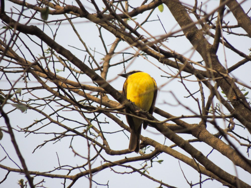
Nome popular:
Nome científico:
Características morfológicas:
Aimentação e comportamento:
Distribuição geográfica:
Nome popular: Bentevizinho-do-brejo
Nome científico: Philohydor lictor
Características morfológicas: Tem 18 centímetros, seu bico é comprido e fino. Possui crista amarela-enxofre, bordas das rêmiges
externas ferrugíneas. Sua voz é um fino “sirr”, “tzri-tzri”.
Aimentação e comportamento: Alimentação consiste de artrópodes. Vive aos pares ou em pequenos grupos familiares. Vive a pouca altura. Pousa
geralmente ereto. O seu nervosismo é denunciado por movimentos bruscos de asas, do pássaro pousado.
Distribuição geográfica: Grande parte do Brasil, em duas regiões separadas:
em toda a Amazônia até o Piauí, e em direção sul até o Mato Grosso e Goiás;
acompanhando a costa, do Pernambuco ao Rio de Janeiro.
Encontrado também no Panamá e nos demais países amazônicos - Guianas, Venezuela, Colômbia, Equador, Peru e Bolívia.
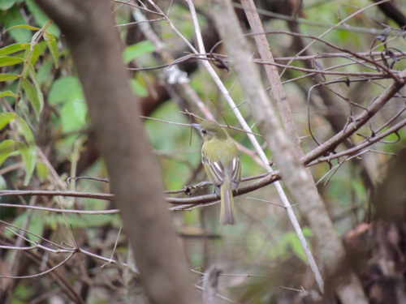
Nome popular:
Nome científico:
Características morfológicas:
Aimentação e comportamento:
Distribuição geográfica:
Nome popular: Cabeçudo
Nome científico: Leptopogon amaurocephalus
Características morfológicas: Mede 13cm. Pousa ereto ou levemente inclinado para cima, desde abaixo da copa até próximo ao chão.
Não é observado em áreas abertas ou fora da vegetação densa. Seu chamado, alto e característico, parece vir de uma ave muito maior.
É uma risada forte e relativamente longa, com as notas bem separadas. Depois de aprendida, consegue-se observá-la com mais facilidade.
Ela não é muito tímida, mas a coloração geral verde garrafa, com lavado de amarelo na barriga, torna difícil de distingui-la no meio
da folhagem.
Aimentação e comportamento: Caça insetos em voo ou embaixo de folhas, saindo do poleiro e apanhando a presa. Não costuma retornar
ao ponto de pouso, indo comer em outro galho e seguindo a patrulha do interior da mata continuamente. Vive solitário ou em casais.
Gosta de pousar nos cipós e galhos finos, em áreas expostas da parte interna da mata. Pousado, levanta com frequência somente uma das asas.
Distribuição geográfica: Ocorre praticamente em todo o Brasil, sendo que grande parte foi observada na Mata Atlântica, na região
Sul e Sudeste do Brasil.
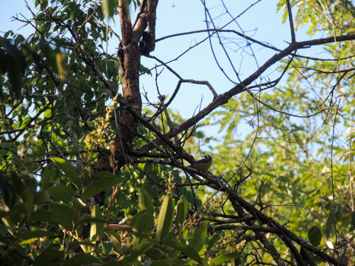
Nome popular:
Nome científico:
Características morfológicas:
Aimentação e comportamento:
Distribuição geográfica:
Nome popular: Cambacica
Nome científico: Coereba flaveola
Características morfológicas: Mede aproximadamente 10,5-11,5 centímetros e pesa cerca de 8-10 gramas. O dorso é marrom-escuro. As
asas e a cauda são marrom-escuras; as rêmiges primárias possuem leve bordeamento esbranquiçado, mais evidente na base. O peito e o
uropígio são amarelos. O ventre e o crisso são amarelo-limão, e por vezes esbranquiçados. A coroa e a face tem coloração negra; evidente
faixa superciliar branca; garganta cinzenta. O bico é curvado e pontudo, negro e de base rosada.
Aimentação e comportamento: Néctar, frutas e artrópodes. Para coletar alimento, em qualquer altura, agarra-se firmemente à coroa
das flores e com o bico curvo e pontiagudo perfura o cálice, atingindo assim os nectários. Visita também as garrafas de água açucarada,
destinadas a atrair beija-flores e comedouros de frutas para pássaros. Aprecia muito banana, mamão, jabuticaba, laranja e melancia,
daí vem seu nome em inglês bananaquit. Vive solitária ou aos pares e é bastante ativa, mas também pode ser vista em pequenos bandos.
Toma banho muitas vezes, por causa do contato com o néctar pegajoso. Seu canto é relativamente forte, simples e monótono, e emitido
incansavelmente. Canta a qualquer hora do dia e em qualquer época do ano. A fêmea também canta, mas pouco e por menos tempo. Para
medrontar um rival, põe-se de pé, estica o corpo e vibra as asas. Muito briguentas, as cambacicas chegam a cair engalfinhadas no solo,
onde continuam a luta. E é até comum aparecer em quintais com bebedouros de beija-flores, mas geralmente espécies como o
beija-flor-tesoura as espanta, ficando com a posse do bebedouro.
Na busca por alimento, muitas vezes fica de cabeça para baixo em um galho, visando atingir a flor. Geralmente está no meio das folhas
e movimenta-se pelo interior da copa. Entretanto, voa bem e atravessa áreas abertas entre matas ou para visitar uma árvore isolada e
florida em um campo. Também visita arbustos isolados e próximos à mata.
É comum em uma grande variedade de hábitats abertos e semiabertos, arborizados, onde existam flores - inclusive em quintais, podendo
se acostumar com a presença humana, não tendo medo da aproximação.
Distribuição geográfica: Ocorre em quase todas as regiões do país, podendo estar ausente de regiões extensivamente florestadas,
como no oeste e centro da Amazônia. É encontrada desde o SE México, América Central e Caribe e em todos os países da América do Sul,
com exceção do Chile e Uruguai. Rara nos Estados Unidos (Flórida) e Cuba.

Nome popular: Carcará
Nome científico: Caracara plancus
Características morfológicas: Medindo cerca de 50-60 centímetros da cabeça a cauda, o peso do macho é de 834 g; a fêmea pesa 953
g e mede cerca de 123 centímetros de envergadura; o carcará é facilmente reconhecível quando pousado, pelo fato de possuir uma espécie
de solidéu preto sobre a cabeça, assim como um bico adunco e alto, que assemelha-se à lâmina de um cutelo; a face é vermelha. É recoberto
de preto na parte superior e possui o peito de uma combinação de marrom claro com riscas pretas, de tipo “carijó”; patas compridas e de cor
amarela; em voo, assemelha-se a um urubu, mas é reconhecível por duas manchas de cor clara na extremidade das asas. Deve seu nome à
vocalização que emite. O peso varia de 786-953 gramas.
Aimentação e comportamento: Não é um predador especializado, e sim um generalista e oportunista, assim como o seu parente próximo, o
carrapateiro. Onívoro, alimenta-se de quase tudo o que acha, de animais vivos ou mortos até o lixo produzido pelos humanos, tanto nas áreas
rurais quanto urbanas. Adaptou-se à presença humana, comendo restos de comida no lixo das casas ou as vísceras de peixe nos acampamentos de
pescadores. Suas estratégias para obtenção de alimento são variadas: caça lagartos, cobras, sapinhos e caramujos; rouba filhotes de outras aves,
até de espécies grandes como garças, colhereiros e tuiuiús; arranha o solo com os pés em busca de amendoim e feijão; apanha frutos de dendê;
ataca filhotes recém-nascidos de cordeiros e outros animais. Também segue tratores que estão arando os campos, em busca de minhocas e larvas ou
pequenos vertebrados, como anfíbios Leptodactylus fuscus (Crozariol & Gomes 2009). É muito comum ser avistado ao longo das rodovias para
alimentar-se dos animais atropelados. Fica nas proximidades dos ninhais para comer restos de comida caídos no chão, ovos ou filhotes deixados
sem a presença dos pais. Chega a reunir-se a outros carcarás para matar uma presa maior. É também uma ave comedora de carniça e é comumente visto
voando ou pousado junto a urubus pacificamente, principalmente ao longo de rodovias ou nas proximidades de aterros sanitários e locais de depósito
de lixo. Dois hábitos pouco conhecidos são a caça de crustáceos nos manguezais e a pirataria. Vive solitário, aos pares ou em grupos, beneficiando-se
da conversão da floresta em áreas de pastagem, como aconteceu no leste do Pará. Pousa em árvores ou cercas, sendo frequentemente observado no chão,
junto a queimadas e ao longo de estradas. Passa muito tempo no chão, ajudado pelas suas longas patas adaptadas à marcha, mas é também um excelente
voador e planador; costuma acompanhar as correntes de ar ascendentes. Durante a noite ou nas horas mais quentes do dia, costuma ficar pousado nos
galhos mais altos, sob a copa de árvores isoladas ou nas matas ribeirinhas.
Para avisar os outros carcarás de seu território ou comunicação entre o casal, possui um chamado que origina o seu nome comum, “carcará”.
Nesse chamado, dobra o pescoço e mantém a cabeça sobre as costas, enquanto emite o som. É visto com frequência em áreas urbanas.
Distribuição geográfica: Possui uma distribuição geográfica ampla, que vai da Argentina até o sul dos Estados Unidos, ocupando toda uma variedade
de ecossistemas, fora a cordilheira dos Andes. Sua maior população se encontra no sudeste e nordeste do Brasil.
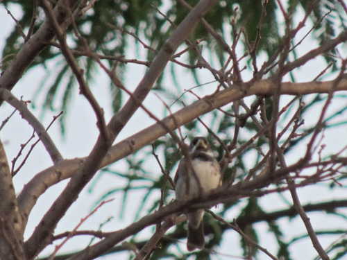
Nome popular:
Nome científico:
Características morfológicas:
Aimentação e comportamento:
Distribuição geográfica:
Nome popular: Coleirinho
Nome científico: Sporophila caerulescens
Características morfológicas: Mede 12 cm e pesa aproximadamente 10,5 g. O macho, com seu inconfundível colar branco e negro recebeu essa denominação.
Além do colar, ao lado da garganta negra um “bigode” branco define a área sob o bico amarelado ou levemente cinza-esverdeado. Existem machos com peito
branco e outros com peito amarelo (ambos pertencem à forma nominal, sendo a forma de peito amarelo apenas um morph ou variação).
A fêmea é toda parda, mais escura nas costas. Sob luz excepcional, é possível ver que ela também possui o esboço do desenho da garganta do macho.
Os machos juvenis saem do ninho com a plumagem idêntica à da fêmea. As fêmeas não são canoras.
Aimentação e comportamento: Congrega-se nos capinzais soltando grãos e usa o bico forte para quebrar as sementes. O nome papa-arroz vem do hábito
de também usar plantações de arroz como fonte de alimentação. Além do arroz, adaptou-se às várias gramíneas trazidas da África e acompanhou a expansão
da pecuária nas áreas anteriormente florestadas. Aprecia os frutos do Tapiá ou Tanheiro . Costuma frequentar comedouros com sementes e quirera de milho.
Fora do período reprodutivo, é uma ave de comportamento gregário, vivendo em grupos de 6 a 20 indivíduos, inclusive às vezes formando grupos mistos com
outras espécies de papa-capins e tizius. O peso e tamanho reduzidos permitem a esta ave alcançar as sementes de gramíneas trepando pela haste das plantas.
Assim como outras aves, o coleirinho foi beneficiado pela introdução de algumas gramíneas africanas, especialmente da braquiária, que parece ser a base de
sua alimentação em áreas alteradas pelo homem. As populações mais meridionais são migratórias e deslocam-se para latitudes mais baixas nos meses mais frios.
Distribuição geográfica: Seu habitat são campos abertos e capinzais, ocorrendo praticamente em todo o Brasil ao sul do rio Amazonas, com exceção da
parte florestal da Região Amazônica ( onde vem expandindo sua área de distribuição se aproveitando da abertura de pastagens e plantações ), ocorrendo também em áreas urbanas

Nome popular: Encontro
Nome científico: Icterus pyrrhopterus
Características morfológicas: Mede cerca de 20 centímetros de comprimento. O macho da espécie tem 33,3 gramas de peso médio e a fêmea 30,4 gramas de peso médio.
O corpo longilíneo, terminado por uma longa cauda, produz uma silhueta característica, ainda mais sublinhada pelo bico fino. Sobre as asas, no encontro
(razão de um dos nomes comuns) apresenta uma área de penas diferenciadas de coloração que vai do amarelo ao castanho forte.
Aimentação e comportamento: Sempre metido no meio da vegetação da copa ou das bordas, procura invertebrados, frutos e flores. Como o joão-pinto, suga o néctar das
flores, abrindo-as ou enfiando o bico, às vezes a cabeça, na corola. Gosta das flores de ipê, tarumã, piúva e pombeiro, umbigo de bananeira, entre outras. Uma das formas
de diferenciar o encontro do inhapim (Icterus cayanensis) é o comportamento mais acrobático de se alimentar. Comum nos ambientes florestados, também utiliza-se de capões
de cerradão e árvores ou arbustos isolados próximos à mata. Vive solitário, aos pares e, eventualmente, em bandos, às vezes junto a bandos mistos. Nas manhãs frias, gosta
de pousar em galhos expostos para tomar sol nas primeiras horas do dia. Uma característica que vem sendo constantemente observada, é que esta ave tem o costume de usar sua
inteligência, quando uma ave maior que ela está se alimentando de um fruto, ele imita sons de aves predadoras para o fim de afugentar as aves e alimentar sua prole com o
fruto conquistado. Ocasionalmente frequenta comedouros com frutos.
Distribuição geográfica: É observado em grande parte do Brasil, exceto na Região Norte do país.
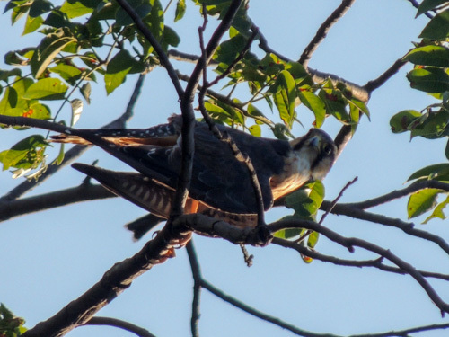
Nome popular:
Nome científico:
Características morfológicas:
Aimentação e comportamento:
Distribuição geográfica:
Nome popular: Falcão-de-coleira
Nome científico: Falco femoralis
Características morfológicas: Ambos os sexos são semelhantes, sendo que a fêmea é maior do que o macho. O macho mede entre 35 e 38 centímetros e pesa entre 208 e 305 gramas.
A fêmea mede entre 43 e 45 centímetros e pesa entre 271 e 460 gramas. Espécie esbelta, de asas e cauda bastante longas. A cabeça, testa, coroa nuca e manto são cinza ardósia com
as bordas das penas brancas. Bochechas e garganta são brancas, separados por uma listra malar escura. Possui largas faixas supra-oculares brancas ligando-se na nuca onde sua
coloração torna-se amareladas e abaixo, uma faixa cinza-ardósia terminando nas laterais da cabeça. A cauda é escura, finamente barrada com cinco faixas brancas e faixa terminal
branca. Na asa aberta nota-se orla posterior nitidamente esbranquiçada, secundárias com larga ponta branca, o que é bem pronunciado em voo. As penas rêmiges são enegrecidas.
Nas partes inferiores apresenta peito branco e o ventre escuro apresenta fino barrado com as penas apresentando as margens ou bordas brancas. O crisso e os calções são castanhos.
O bico é cinza escuro com cere amarelo. Os olhos são marrom escuro com anel periocular amarelo. Tarsos e pés também são amarelados.
O imaturo apresenta as partes superiores na cor castanho escuro com o peito manchado e sobrancelha mais clara.
Aimentação e comportamento: Caça rente ao solo em campos e restingas. Às vezes peneira. Come insetos, também cupins em revoada, lagartixas, morcegos e ocasionalmente pássaros
e até cobras peçonhentas como a jararaca. Aparece nas grandes queimadas, onde pousa em árvores à frente do fogo para localizar presas. Espécie campestre, ocorre em áreas abertas
como campos, cerrados, cerradões, bosques abertos, zonas campestres e urbanas. Em zonas campestres, costuma pousar sobre árvores baixas, mourões de cerca e cupinzeiros, de onde
procura suas presas. Já nas zonas urbanas, pode ser encontrado pousado sobre postes, fios de eletricidade, antenas e borda de edifícios.
Distribuição geográfica: Ocorre dos Estados Unidos à Terra do Fogo, todo o Brasil.
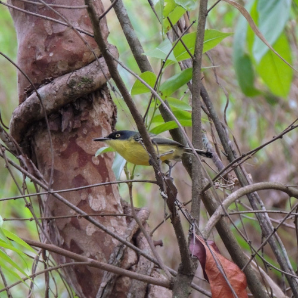
Nome popular:
Nome científico:
Características morfológicas:
Aimentação e comportamento:
Distribuição geográfica:
Nome popular: Ferreirinho-relógio
Nome científico: Todirostrum cinereum
Características morfológicas: O vivo contraste entre o cinza-azulado escuro da cabeça com a parte ventral amarela chama a atenção quando observado.
O restante das partes superiores é lavado de tom oliváceo, enquanto as penas longas das asas são bordejadas de amarelo. A cauda é escura, mas, vista
por baixo, nota-se que as penas laterais possuem uma grande área branca na ponta. Os olhos são amarelo-ouro, destacados contra a área mais escura da
parte frontal da cabeça, quase uma máscara. Bico longo e chato, escuro e também notável. Mede 8-10 cm de comprimento e pesa cerca de 4-7,5 gramas.
O dimorfismo sexual é pouco aparente, restringindo-se a uma marcação esbranquiçada discreta no píleo, para as fêmeas ().
Aimentação e comportamento: Alimenta-se de dípteros, lepidópteros e outros. Ativo o dia inteiro, caça invertebrados no meio das folhagens da
copa e baixa até 2 metros do chão. Característico de ambientes mais abertos, não ocorre em áreas extensamente florestadas, sendo muito comum em
cidades. Vive escondido no meio da vegetação baixa e apresenta comportamento característico de movimentar a cauda lateralmente.
O canto origina o nome comum, parecendo com um relógio de mesa quando se dá corda. Canta o ano inteiro, bem como nas horas quentes do dia. O
casal responde um ao outro, também aproximando-se de uma gravação do canto. É encontrado em áreas urbanas pouco ou bem arborizadas dependendo do local.
Gosta muito de habitar a árvore ficus benjamina, onde vai de uma para a outra. Nessa árvore constrói seu ninho. Vive solitário ou aos pares.
Distribuição geográfica: Ocorre desde o sul do México até o NE da Argentina, estando ausente apenas na Amazônia florestal.
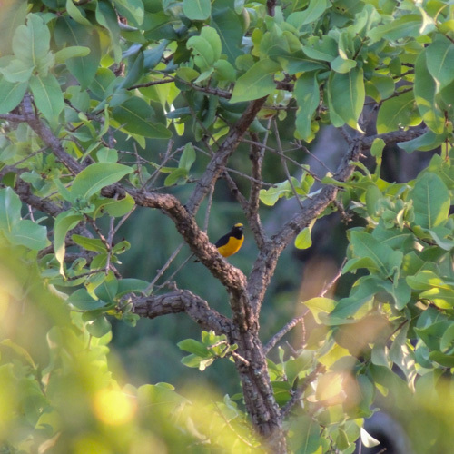
Nome popular:
Nome científico:
Características morfológicas:
Aimentação e comportamento:
Distribuição geográfica:
Nome popular: Fim-fim
Nome científico: Euphonia chlorotica
Características morfológicas: Mede 9,5 centímetros de comprimento e pesa cerca de 8 gramas (macho).
É uma das espécies mais conhecidas do gênero Euphonia. Além do colorido do macho, outra característica marcante nessa ave é o canto assobiado,
usado para contato entre o grupo e origem dos nomes comuns.
Sua voz pode ser facilmente reconhecida: “di-di”, “vi-vi”, “vem-vem” ou “fi-fi” (chamada de ambos os sexos). O canto é fraco, chilreado rápido,
podendo lembrar o de um pintassilgo. Também imita outras aves. Macho e fêmea chamam-se nas andanças pela mata. À distância, pode ser confundido
com um dos chamados do risadinha, quando faz fi-fi.
A fêmea é verde-olivácea, de fronte amarelada e ventre esbranquiçado. É interessante notar que a fêmea possui um canto elaborado também, além do “fi-fi”.
Aimentação e comportamento: Frugívoro. Geralmente pousa ao lado de um cacho de frutos e os ingere um após o outro. As sementes ingeridas
passam intactas pelo tubo digestivo e, quando eliminadas junto com as fezes, muitas vezes aderem a um tronco de árvore ou caem no solo onde
germinam. Dessa forma, esta e outras espécies de Euphonia são consideradas excelentes dispersoras de sementes. Apreciam muito as frutinhas
das ervas-de-passarinho, plantas das famílias lorantáceas e viscaceae; neste último caso, ingerem a polpa dos frutos e a semente, deixando cair
a casca. Em geral, as sementes são defecadas na forma de um “colar de contas” nos galhos, mas algumas vezes podem cair no solo, onde não se desenvolvem.
Existe uma particularidade anatômica que muito singulariza esta ave, que é a não existência de moela, sendo o próprio papo bastante atrofiado.
Tal simplicidade do aparelho digestivo revela claramente o regime frugívoro levado ao extremo. Habita a mata baixa e rala, o cerrado, a caatinga,
cocais e matas serranas (região Sudeste).
Visita as áreas de vegetação mais densa na procura de insetos e frutos, sempre na parte alta da árvore ou arbustos maiores. Costuma movimentar-se
no meio da folhagem das copas, não se aproximando do chão na parte interna da ramagem.
Distribuição geográfica: Ocorre em todas as regiões do Brasil.
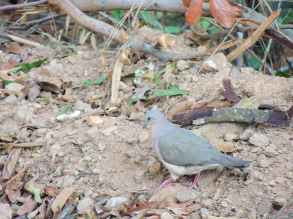
Nome popular:
Nome científico:
Características morfológicas:
Aimentação e comportamento:
Distribuição geográfica:
Nome popular: Juriti-pupu
Nome científico: Leptotila verreauxi
Características morfológicas: Tem 29 centímetros de comprimento e pesa entre 160 e 215 gramas. Sua plumagem é marrom, com peito claro, cabeça
cinzenta com alguns reflexos metálicos na nuca e alto dorso. Quando em voo é possivel notar uma coloraçao vermelho ferrugem em baixo das asas.
Possui, ainda, uma coloração azulada ao redor dos olhos.
Muito arisca, logo voa e se esconde, sendo que na maioria das vezes notamos sua presença pelo canto característico, que é melancólico e repetitivo:
“pu… puuu”, cujo som deu origem a seu nome popular.
Aimentação e comportamento: É granívora e frugívora, pois come grãos, sementes, frutas e vegetais. Com um rápido movimento do bico vira as
folhas mortas para descobrir sementes e frutos caídos; esse movimento também é utilizado para extração de sementes caídas em uma fenda: joga os
grãos no chão para pegá-los em seguida. Vive nas matas e ambientes bem arborizados, vindo frequentemente ao chão à cata dos grãos de que se alimenta.
Comum no chão de habitats quentes, tais como capoeiras e campos adjacentes, bordas de florestas densas e cerrados. Vive solitária ou aos pares.
Alimenta-se de sementes e frutos no chão.Ave arisca. Quando perturbada, foge caminhando sem fazer barulho ou voa, emitindo um som com as asas,
até uma árvore próxima.
Voa bem. Produz um ruído sibilante. Move-se no solo andando com passinhos miúdos e rápidos. Para a cabeça a cada passo dado, durante um instante,
a fim de observar melhor as cercanias. Não saltita nunca. Boceja. Não esconde a cabeça entre as penas do dorso para dormir. Gosta de tomar
banho e prefere beber água nas primeiras horas da manhã ou ao cair da tarde. Após o macho ter galado a fêmea, ela “gala” o macho. Mostra
nervosismo através do balançar da cauda.
Distribuição geográfica: Presente em quase todo o Brasil e também do sul dos Estados Unidos até a Argentina.
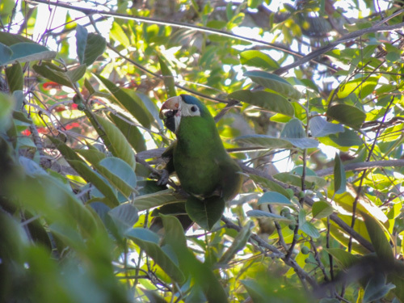
Nome popular:
Nome científico:
Características morfológicas:
Aimentação e comportamento:
Distribuição geográfica:
Nome popular: Maracanã-pequena
Nome científico: Diopsittaca nobilis
Características morfológicas: A maracanã é realmente uma ararinha. Distinguível pela testa azulada, pele branca nos lados do bico e ao redor
dos olhos, ombro e parte média da asa vermelhos, extremo da asa azul. Em voo vê-se a base da asa vermelha, borda da asa amarela e rabo oliva-dourado.
A pele nua em volta dos olhos é característica típica de seu grupo. Mede cerca de 30-35 centímetros de comprimento e o peso varia de 129 a 169 g.
Aimentação e comportamento: Alimenta-se de coquinhos de palmeiras como o dendê e frutos, principalmente o caroço, que tritura com seu possante
bico, utiliza o bico como terceiro pé e usa as patas para segurar a comida, levado-a á boca. costuma comer caranbolas verde.
Comum. Habita uma variedade de ecossistemas, incluindo cerrado, buritizais, beira de matas, caatinga e plantações, até 1400 metros. Vive normalmente
em pares e em grandes bandos fora da época reprodutiva. Pode ser vista com frequência mesmo em grandes cidades como a cidade de São Paulo e Rio de
Janeiro, porém, neste caso, como espécie introduzida.
Distribuição geográfica: Ocorre em toda a região Centro Oeste. Na Região Nordeste é mais restrita ao litoral mas também no interior de MA,
PI e BA. No Sudeste desce até SP. Excassa na Amazônia Central, ocorre localmente em áreas de RR e AP e no sul da Amazônia. Ausente na região Sul.
Vive também no leste dos Andes, Venezuela, Guianas, centro-oeste da Bolívia e sudeste do Peru.
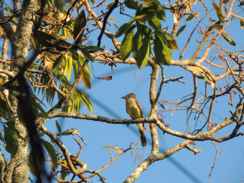
Nome popular:
Nome científico:
Características morfológicas:
Aimentação e comportamento:
Distribuição geográfica:
Nome popular: Maria-cavaleira
Nome científico: Myiarchus ferox
Características morfológicas: Em todas as aves do gênero, a garganta e parte superior cinzas, com a barriga amarela. Dorso escuro, com a cabeça
relativamente grande e penas do topete mantidas semieriçadas. Bico escuro e forte. Cauda longa, do mesmo tom das costas. Nas asas, duas faixas claras
e bordos claros nas penas de voo. Essa espécie, Myiarchus swainsoni e Myiarchus tyrannulus são muito parecidas, de difícil identificação até para
especialistas. O bico é todo negro, embora os detalhes somente possam ser observados de perto e com ótima luz. Assim como outras marias-cavaleiras,
possui a parte inferior amarela, a garganta cinza e as partes superiores castanhas. Os jovens apresentam coloração marrom nas asas e no rabo,
dificultando ainda mais a identificação.
O canto é a característica principal para diferenciação. Um chamado rápido é o mais corriqueiro. Alegre, levemente acelerado no início e terminado
com uma nota um pouco mais longa.
Aimentação e comportamento: Alimenta-se principalmente de insetos alados que captura em voos curtos, retornando ao poleiro em seguida, mas
também caça insetos sobre as folhas e ramos de árvores e consome pequenos frutos. Mantém-se pousado abaixo da copa, seja em matas, seja em áreas
abertas. Usa desde as árvores altas até o sub-bosque das florestas, bem como vive nas áreas de cerrado aberto. É desconfiada, vive no meio da copa
das árvores e é mais fácil ouvi-la do que vê-la. Seus hábitos não diferem muito das outras marias-cavaleiras, pois passa a maior parte do tempo
imóvel, empoleirada no estrato médio de bordas de matas.
Distribuição geográfica: Está presente em todo o Brasil, ocorrendo em simpatria com M. swainsoni, M. tyrannulus e M. tuberculifer ao longo da maior parte da distribuição.
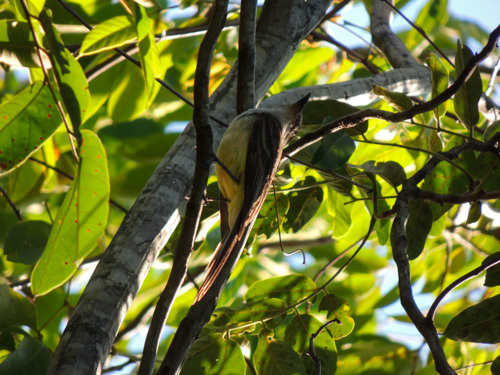
Nome popular:
Nome científico:
Características morfológicas:
Aimentação e comportamento:
Distribuição geográfica:
Nome popular: Maria-cavaleira-de-rabo-enferrujado
Nome científico: Myiarchus tyrannulus
Características morfológicas: Cerca de 1/3 maior do que as outras espécies do gênero, apresenta as penas da cauda com um largo bordo marrom na
parte interna (os juvenis do gênero possuem uma faixa estreita nas duas margens e ponta). Nas asas fechadas, uma linha marrom avermelhada nas penas
de vôo da parte mais externa. Essas características necessitam de condições favoráveis para serem notadas, por exemplo, quando a ave abre as asas ou
a cauda. Mede aproximadamente 22cm. A principal característica (a qual dá o nome popular da espécie) é a face interna da cauda com coloração alaranjada,
facilmente vista olhando a ave de baixo para cima.
Aimentação e comportamento: Como as outras aves do gênero, ao pousar procura insetos em vôo para caçar. Antes de voar, localiza-os com movimentos
lentos de cabeça, mantendo as penas da cabeça e do papo semi-eriçadas. Além dos insetos, alimenta-se de suas larvas, bem como frutos.
Ocorre em todos os ambientes florestados, sendo mais comum na mata seca e no cerradão. Aparece nas áreas de cerrado mais denso. Como também em borda de matas, campos com árvores esparsas e caatingas.
Distribuição geográfica: Presente em quase todo o Brasil, com exceção de algumas áreas da Amazônia.

Nome popular: Neinei
Nome científico: Megarynchus pitangua
Características morfológicas: Bico extremamente largo e chato, que é, aliás, muito variável; tem o tarso muito curto. Ave que lembra muito
o bem-te-vi (Pitangus sulphuratus), mas seu bico é muito robusto e sua vocalização totalmente difere. Os dois únicos meios de diferenciar o
neinei são pela vocalização, bem diferente da vocalização do bem-te-vi, ou pelo tamanho do bico, que é bem maior que o do bem-te-vi. O problema
é que o bico é mais largo que comprido, então seu tamanho chama mais atenção quando visto por baixo do que de perfil. Mede cerca de 21-23 cm.
E pesa em torno de 52-68 gramas.
Aimentação e comportamento: Seu grande bico o ajuda a apanhar os insetos e as frutinhas dos quais se alimenta. Já foi visto pescando pequenos
peixes e caçando pequenos lagartos e filhotes de outras aves. Ave migratória, sendo encontrada nos meses mais quentes do ano. O casal tem o hábito
de cantar em dueto, porém este é mal sincronizado. Apesar da aparência quase idêntica ao seu primo bem-te-vi, o neinei se comporta de forma um tanto
diferente. É muito mais tímido, sendo mais fácil de ouvir que ver, pois passa a maior parte do seu tempo na copa das árvores. É Frequentemente
encontrado em florestas, paisagens abertas com árvores esparsas, cerrados e áreas urbanas arborizadas, de preferência onde haja água.
É migratório em algumas regiões.
O neinei, apesar de viver praticamente sozinho, pode ser visto em casal ou em um bando de TRÊS indivíduos.
Distribuição geográfica: Ocorre do México a Argentina e em todo o Brasil.
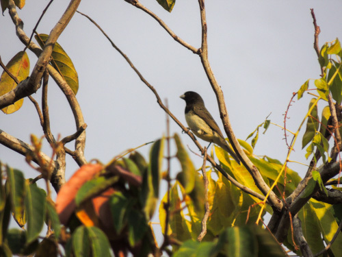
Nome popular:
Nome científico:
Características morfológicas:
Aimentação e comportamento:
Distribuição geográfica:
Nome popular: Papa-capim-de-costas-cinza
Nome científico: Sporophila ardesiaca
Características morfológicas: Possui peito branco e a cabeça e o pescoço cinzento-escuros, o que lhe confere o formato de uma carapuça.
Pode ser confundido com o baiano que se distingue por ter um cinza-esverdeado nas costas e na carapuça e amarelo no peito, mais comum do Brasil
Central, Norte e Nordeste. Seu canto sofre variações regionais e é quase idêntico ao do baiano.
Aimentação e comportamento: Congrega-se nos capinzais soltando grãos e usa o bico forte para quebrar as sementes. O nome papa-arroz vem do
hábito de também usar plantações de arroz como fonte de alimentação. Além do arroz, adaptou-se às várias gramíneas trazidas da África e acompanhou
a expansão da pecuária nas áreas anteriormente florestadas. Aprecia os frutos do Tapiá ou Tanheiro (Alchornea glandulosa). Costuma frequentar
comedouros com sementes e quirera de milho. Costuma se misturar a bandos de outros Sporophila e passa despercebido.
Distribuição geográfica: Ocorre nos estados de Minas Gerais, São Paulo, Espírito Santo, Rio de Janeiro, Goiás e Bahia. Espécie encontrada também na Venezuela.
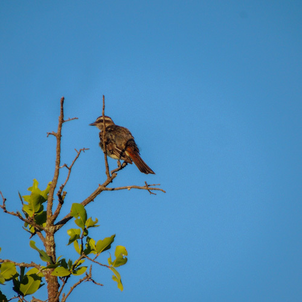
Nome popular:
Nome científico:
Características morfológicas:
Aimentação e comportamento:
Distribuição geográfica:
Nome popular: Peitica
Nome científico: Empidonomus varius
Características morfológicas: Mede cerca de 18 centímetros. A plumagem, toda rajada de cinza escuro, lembra o bem-te-vi-rajado e o bem-te-vi-pirata.
Seu tamanho é intermediário entre as duas espécies, tendo a cabeça e o bico mais proporcionais do que o bem-te-vi-rajado. Característica capaz de separá-la
do bem-te-vi-pirata é o marrom avermelhado da base superior da cauda e os bordos da mesma cor das penas caudais.
Aimentação e comportamento: Alimenta-se basicamente de insetos alados que apanha em voos curtos a partir de um poleiro e também de pequenas frutinhas
como as do tapiá, que apanha tentando pairar no ar como um beija-flor, sem pousar nos galhos. Adota, quase sempre, o mesmo comportamento ao apreciar os
frutos/sementes da aroeira-do-campo (Schinus lentiscifolius). De hábitos migratórios, vive em bordas de matas, capoeiras, clareiras em florestas primárias,
cerradões e outras formações com árvores de tamanho médio, mas não muito fechadas.
Seu canto é um chamado abafado, emitido em pousos tradicionais na copa. Também costuma caçar insetos em voo, retornando para comer a presa nos poleiros.
Distribuição geográfica: Ocorre a leste dos Andes da Argentina até os Estados Unidos, realizando migrações sazonais ao longo de sua distribuição,
deslocando-se para latitudes mais baixas no inverno. Suas migrações são extensas e ainda pouco conhecidas.
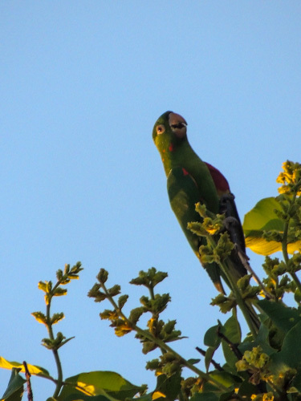
Nome popular:
Nome científico:
Características morfológicas:
Aimentação e comportamento:
Distribuição geográfica:
Nome popular: Periquitão
Nome científico: ~Psittacara leucophthalmus
Características morfológicas: Possui a cabeça com forma “oval”. Coloração geral verde com os lados da cabeça e pescoço com algumas penas vermelhas,
apenas as coberteiras inferiores pequenas da asa são vermelhas, sendo as grandes inferiores amarelas, chamando muito a atenção em voo, região perioftálmica
nua e branca, íris laranja, bico cor de chifre clara, pés acinzentados. Tamanho médio de 30 á 32 centímetros. O peso varia entre 140 e 171 gramas. Nos jovens
as penas vermelhas da cabeça e sob as asas são ausentes, sendo de cor verde.
Quando em bando vocaliza de forma bem característica.
Aimentação e comportamento: O periquitão-maracanã se alimenta principalmente de frutos e sementes. Habita florestas úmidas, semi-úmidas, pântanos,
florestas de galeria e palmares de buriti nas planícies, até 2500 metros. Não frequenta regiões com rios de águas escuras, e em geral encontra-se em terras
baixas. Voa em bandos de 5 a 40 indivíduos. Dorme coletivamente em variados lugares. É muito frequente em áreas urbanas como do Rio de Janeiro, onde passam
voando em bandos grandes fora do período de reprodução.
Distribuição geográfica: Ocorre em quase todo o Brasil, sendo encontrado desde em florestas até cidades. É uma ave adaptável a ambientes alterados
pelo homem e em alguns locais pode ser considerada uma espécie sinantrópica. É encontrado a leste dos Andes, estendendo-se até o litoral, e desde a Colômbia e
Venezuela até o norte da Argentina e Uruguai, incluindo parte da Amazônia.
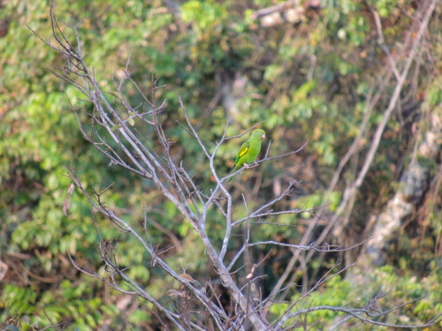
Nome popular:
Nome científico:
Características morfológicas:
Aimentação e comportamento:
Distribuição geográfica:
Nome popular: Periquito-de-encontro-amarelo
Nome científico: Brotogeris chiriri
Características morfológicas: Apresenta uma faixa amarela nas coberteiras superiores das rêmiges secundárias de cada asa, isto é, na região superior
das asas, e uma coloração amarelo-esverdeada em sua face. Os indivíduos adultos medem de 22,0 a 23,5 centímetros de comprimento, a cauda 10 centímetros
e as asas cerca de 12,5 centímetros. Possui bico resistente e de cor branco-amarronzada, com o qual parte seu alimento. Ao redor de seus olhos escuros,
existe uma delimitação branca formada apenas pela pele. Possui difícil diferenciação sexual.
Aimentação e comportamento: Alimenta-se de frutos, sementes, flôres, néctar e cupins. Em certas épocas do ano podem frequentar comedouros com sementes
como milho por exemplo (Observação Pessoal: João de Almeida Prado). Aprecia muito os frutos da Palmeira Jerivá. Estas aves podem ser encontradas em campos
de vegetação baixa, ilhas de matas intercaladas, matas ciliares, cerrados e cerradões. Desloca-se em bandos, muitas vezes de muitos indivíduos. Adaptou-se
aos ambientes urbanos, onde tornou-se muito comum.
Distribuição geográfica: É encontrado no Brasil central e oriental, norte, oeste e sul da Bolívia, nordeste da Argentina (Chaco, Formosa e Misiones),
leste do Paraguai, Uruguai e Peru. No território nacional, ocorre desde o sul ao extremo do Pará (serra do Cachimbo), Ceará, Maranhão, Piauí, Pernambuco,
Bahia, Minas Gerais, Pantanal, Rio de Janeiro e São Paulo.
Existem populações ferais sustentáveis na América do Norte, estabelecidas em Miami no estado da Flórida, e em Los Angeles e São Francisco no estado da Califórnia.
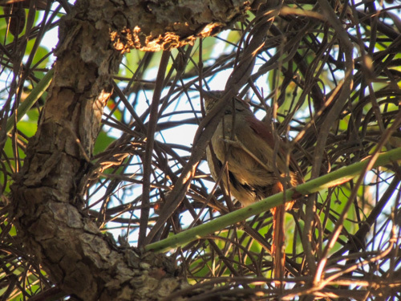
Nome popular:
Nome científico:
Características morfológicas:
Aimentação e comportamento:
Distribuição geográfica:
Nome popular: Petrim
Nome científico: Synallaxis frontalis
Características morfológicas: Mede entre 14 e 16 centímetros de comprimento e pesa entre 11 e 17 gramas.
O adulto destaca-se pela coloração geral marrom-acastanhado. A cabeça apresenta a fronte escura, de coloração marrom-acinzentada, nem sempre presente.
Sua coroa é castanho-avermelhada. Uma listra superciliar mais clara aparece em boas condições de luz, bem como os olhos amarelo-alaranjados, circundados
por algumas penas cinzas mais claras. A área ventral é de coloração cinza claro. A garganta é esbranquiçada com manchas pretas, o peito é de coloração
cinza pálido e o ventre esbranquiçado. Dorso marrom-oliváceo. As coberteiras das asas juntamente com as rêmiges são ruivas, fazendo contraste com o
marrom oliváceo do dorso. A cauda também é ruiva assim como são as coberteiras das asas. Na cauda, as retrizes centrais apresentam coloração
marron-acastanhadas.
Aimentação e comportamento: Sua alimentação consiste de insetos e suas larvas, aranhas, opiliões e outros artrópodes, moluscos etc.
Vive em casais no meio dos arbustos dos cerrados, cerradões e matas secas. Aparece nas partes sempre secas da mata ciliar.
Sua voz é composta por duas notas, a segunda mais alta, sendo o canto repetido continuamente, em especial no começo da manhã.
Distribuição geográfica: Ocorre em quase todo o Brasil, exceto no extremo-oeste da Amazônia.
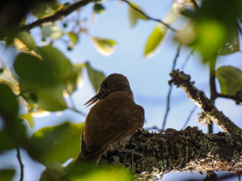
Nome popular:
Nome científico:
Características morfológicas:
Aimentação e comportamento:
Distribuição geográfica:
Nome popular: Pica-pau-pequeno
Nome científico: Veniliornis passerinus
Características morfológicas: Mede 15 cm. Menor representante do gênero Veniliornis. De cor verde-amarelada, mais clara nas partes inferiores.
Coberteiras superiores das asas salpicadas de amarelo; partes inferiores barradas de cinza. Nuca e vértice vermelhos no macho.
Aimentação e comportamento: São predominantemente insetívoros. Os dois sexos costumam estar próximos nos deslocamentos para busca de alimentação.
Acompanham bandos mistos na mata, explorando os troncos e apanhando insetos sob a casca. Furam os galhos e troncos com broca. Assim como outras espécies
de picapaus, o picapauzinho-anão através de pancadas ligeiras, ausculta a árvore para descobrir os lugares carunchados, para posteriormente se alimentar
de larvas e/ou besouros ali presentes. Aprecia algumas frutas como manga e abacate. Vive em áreas abertas, clareiras e bordas de matas secas, caatingas,
cerrados, matas de galeria, de várzea e de terra firme. Encontrado também em mata secundária, mata ripária com bambu, mangues e zonas rurais, pastos e
campos. Encontrado solitário, aos pares ou em grupos familiares. Muito ariscos, movimentam-se rapidamente pelas copas ao perceberem qualquer movimento
estranho. Como os outros pica-paus, escondem-se atrás dos troncos quando percebem uma pessoa, tornando a observação dos detalhes ainda mais difícil.
Observáveis em todos os ambientes florestados, atravessam, em rápidos voos ondulados, áreas de campo entre capões ou árvores isoladas. Aparece em locais
com arbustos densos.
Distribuição geográfica: Ocorre da Venezuela à Bolívia, Paraguai e Brasil amazônico e central (até o oeste do Paraná) e setentro-oriental
(interior do Nordeste):
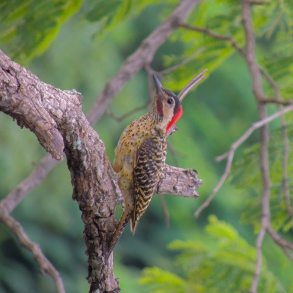
Nome popular:
Nome científico:
Características morfológicas:
Aimentação e comportamento:
Distribuição geográfica:
Nome popular: Pica-pau-verde-barrado
Nome científico: Colaptes melanochloros
Características morfológicas: Mede 28 cm. O tom esverdeado da plumagem camufla ainda mais. Na cabeça, a característica divisão entre vermelho e preto,
única entre os pica-paus, destaca a grande área branca da região dos olhos. De perto e sob boa luz, as bolas negras na plumagem do peito e barriga podem ser
vistas. Os machos possuem pequeno bigode vermelho na base do bico.
Aimentação e comportamento: Apresenta uma série de adaptações para a alimentação e locomoção. Para capturar formigas e cupins, por exemplo, produz uma
secreção que age como uma cola pegajosa, dando à língua a capacidade preensora de uma vara com visgo. Além disso, a cauda age como órgão de apoio para
substratos verticais. Para subir um tronco, o pica-pau pula para cima, de pés paralelos, “sentando” na cauda a cada parada. Através da ramaria horizontal,
entretanto, pula como uma gralha. Para demarcar território, advertindo rivais, e como meio de comunicação entre machos e fêmeas, executa tamborilações, que
consistem em bater com o bico em paus secos, cascas salientes, troncos ocos e até em chapas de aço, simplesmente para produzir rumor. Alimenta-se de formigas
e larvas de outros insetos, principalmente besouros. Desce até os arbustos e o solo para coletar as primeiras. Come também frutos carnosos, principalmente
no inverno, quando diminui a quantidade de insetos podendo até frequentar comedouros. Vive em matas de galeria, cerrados, cerradões, caatingas, campos com
árvores e na borda de florestas. É cada vez mais comum em áreas urbanas.
Distribuição geográfica: Ocorre desde a foz do rio Amazonas (ilha de Marajó) até o Rio Grande do Sul, e para oeste até o Mato Grosso. É encontrado também no Paraguai, Argentina e Uruguai.
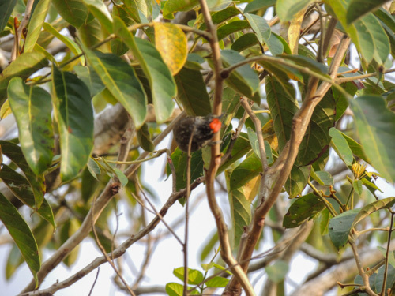
Nome popular:
Nome científico:
Características morfológicas:
Aimentação e comportamento:
Distribuição geográfica:

Nome popular:
Nome científico:
Características morfológicas:
Aimentação e comportamento:
Distribuição geográfica:

Nome popular:
Nome científico:
Características morfológicas:
Aimentação e comportamento:
Distribuição geográfica:
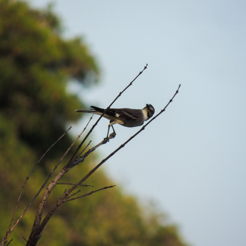
Nome popular:
Nome científico:
Características morfológicas:
Aimentação e comportamento:
Distribuição geográfica:

Nome popular:
Nome científico:
Características morfológicas:
Aimentação e comportamento:
Distribuição geográfica:
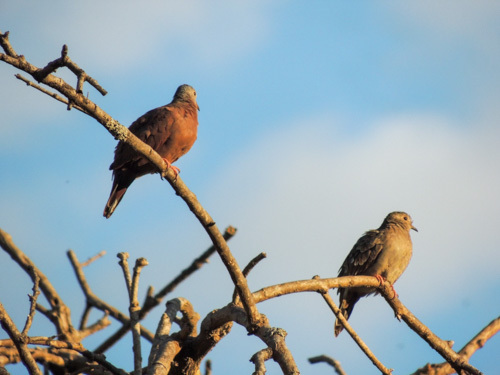
Nome popular:
Nome científico:
Características morfológicas:
Aimentação e comportamento:
Distribuição geográfica:
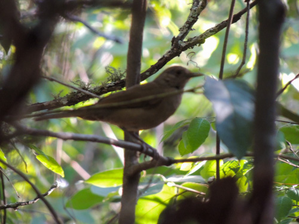
Nome popular:
Nome científico:
Características morfológicas:
Aimentação e comportamento:
Distribuição geográfica:
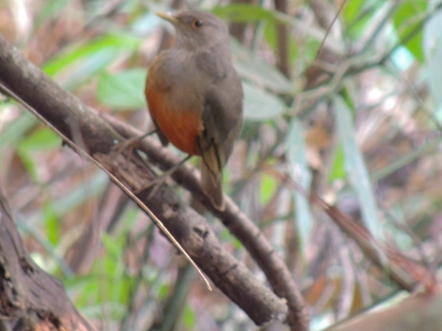
Nome popular:
Nome científico:
Características morfológicas:
Aimentação e comportamento:
Distribuição geográfica:

Nome popular:
Nome científico:
Características morfológicas:
Aimentação e comportamento:
Distribuição geográfica:

Nome popular:
Nome científico:
Características morfológicas:
Aimentação e comportamento:
Distribuição geográfica:

Nome popular:
Nome científico:
Características morfológicas:
Aimentação e comportamento:
Distribuição geográfica:

Nome popular:
Nome científico:
Características morfológicas:
Aimentação e comportamento:
Distribuição geográfica:
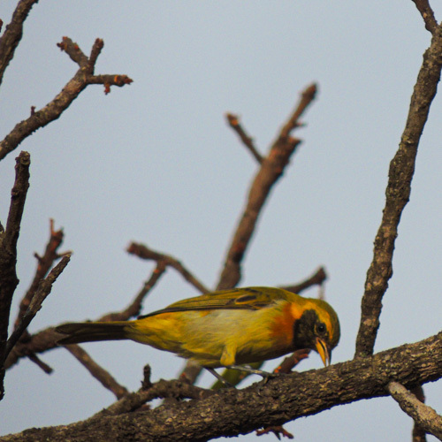
Nome popular:
Nome científico:
Características morfológicas:
Aimentação e comportamento:
Distribuição geográfica:
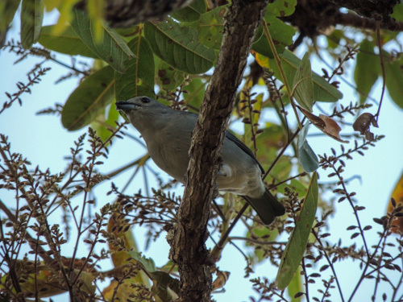
Nome popular:
Nome científico:
Características morfológicas:
Aimentação e comportamento:
Distribuição geográfica:

Nome popular:
Nome científico:
Características morfológicas:
Aimentação e comportamento:
Distribuição geográfica:
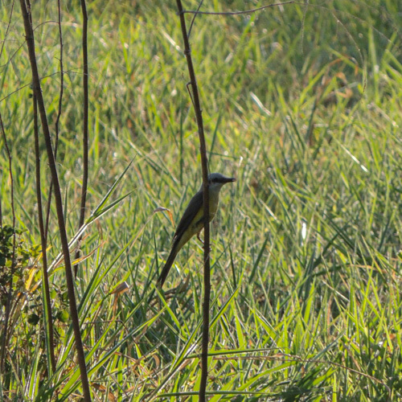
Nome popular:
Nome científico:
Características morfológicas:
Aimentação e comportamento:
Distribuição geográfica:
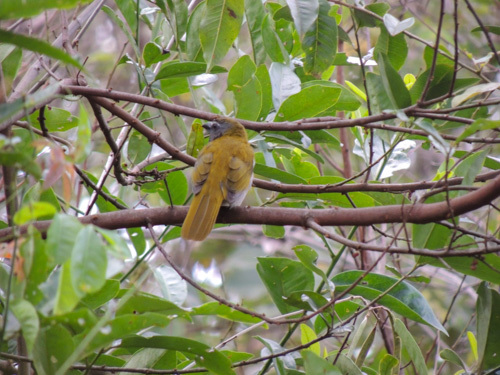
Nome popular:
Nome científico:
Características morfológicas:
Aimentação e comportamento:
Distribuição geográfica:
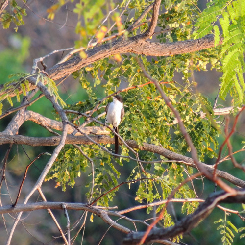
Nome popular:
Nome científico:
Características morfológicas:
Aimentação e comportamento:
Distribuição geográfica:
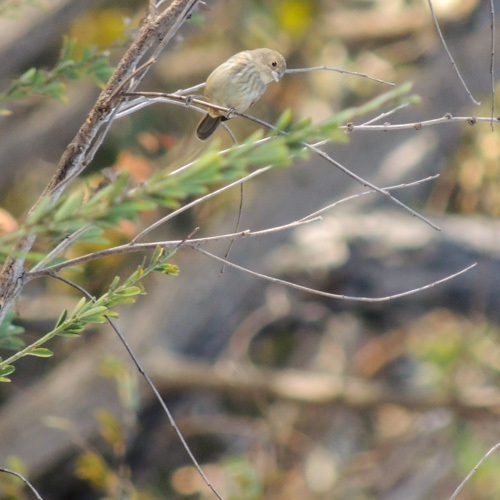
Nome popular:
Nome científico:
Características morfológicas:
Aimentação e comportamento:
Distribuição geográfica: